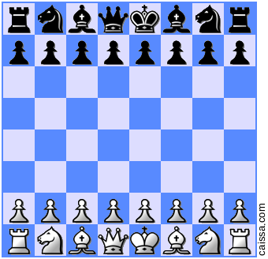

Jedna od važnijih bitaka hladnog rata dogodila se 1972. godine u Reykjavik-u na Islandu. Borba se zapravo dogodila za šahovskom pločom gdje su se za titulu svjetskog prvaka natjecali izazivač Robert James Fischer (USA) i tadašnji prvak Boris Spassky (USSR). Meč je izazvao puno više interesa nego bilo koji drugi šahovski događaj prije ili poslije toga, te zbog toga mnogi taj meč nazivaju "meč stoljeća".
Fischer je rođen 1943. u Chicagu, a odrastao je u New Yorku. Od rane dobi pokazao je zapažene šahovske rezultate. Imao je samo 14 godina kada je postao najmlađi američki prvak u šahu, a s 15 godina postao je najmlađi velemajstor ikad. Dominirao je u mečevima kandidata 1971. godine kao nitko prije, te je tako postao prvi izazivač svjetskog prvaka od drugog svjetskog rata koji nije s područja SSSR-a.
Spassky je rođen 1937. godine u Lenjingradu (danas Sankt Peterburg). Spassky je naučio igrati šah u dobi od 5 godina u vlaku koji je evakuirao iz Lenjingrada tijekom opsade Lenjingrada u Drugom svjetskom ratu. Prvi put je pažnju privukao 1947. u dobi od 10 godina, kada je na simultanci u Lenjingradu pobijedio sovjetskog prvaka Mihaila Botvinika. Od tada je postigao puno šahovskih uspjeha, ali najvažniji se dogodilo 1969. godine kada je pobijedio Tigrana Petrosiana i postao svjetski prvak.